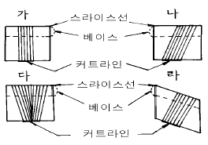
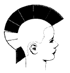

미용장 (2002-07-21 기출문제)
1과목: 임의 구분
1. 업(up)스타일의 시술과 거리가 가장 먼 것은?
- 머리의 구분
- 토대 만들기
- 손놀림
- 머리판넬
(정답률: 알수없음)

2. 다음 그림 중에서 머리의 길이가 양 끝으로 갈수록 점차 길어지는 세이프 방법은?

- 가
- 나
- 다
- 라
(정답률: 알수없음)
3. 한국 옛여인의 머리형태로서 첩지머리에 대한 설명 중 틀린 것은?
- 예장(禮裝)할 때 머리로서 제도에 따르는 계급표시이기도 하였다.
- 왕비, 왕자비, 왕손비는 도금 봉 첩지를 하였다.
- 서민은 흑각 개구리 첩지를 하였다.
- 화관이나 족두리 쓸 때에 고정시키는 역할을 하기도 하였다.
(정답률: 알수없음)
4. 두발의 양을 적게 보이게 하거나 짧은 부분과 긴 부분의 이음으로 쓰는 커트 방법은?
- 회전 커트
- 스퀴이즈 커트 (squeeze cut)
- 라운드 커트 (round cut)
- 스킨 커트 (skin cut)
(정답률: 알수없음)
5. 다음 중 콜드 웨이브(cold wave)를 할 때 웨이브가 잘 나오기가 가장 어려운 두발은?
- 굵은 두발
- 빳빳한 두발
- 연한 두발
- 건조한 두발
(정답률: 알수없음)
6. 롤러컬 시 두발의 끝을 모아서 로울러에 감으면 끝맺음 세트시 어떤 현상이 일어나는가?
- 형성된 볼륨이 커진다.
- 형성된 볼륨이 작아진다.
- 두발의 끝이 갈라진다.
- 두발의 끝이 뭉쳐진다.
(정답률: 알수없음)
7. 마사지에 있어서 손가락이나 손바닥으로서 피부를 눌러주는 동작이 있다. 이 동작은 피의 순환과 피부의 활동에 영향을 준다. 이 동작을 무엇이라고 부르는가?
- 페트리싸지(Pertrissage)
- 후릭션(Friction)
- 스트록킹 무브먼트(Strocking movement)
- 테포트멘트(Tapotement)
(정답률: 알수없음)
8. 콜드웨이브를 시술하기 전에 샴푸를 할 경우 일반적으로 가장 적당한 샴푸는?
- 산성샴푸
- 알칼리성 샴푸
- 중성샴푸
- 특수샴푸
(정답률: 알수없음)
9. 다음 중 모든 스트랜드를 똑같은 길이로 커팅하는 것은?
- 원랭스
- 유니폼 레이어
- 인크리스드 레이어
- 블런트 커팅
(정답률: 알수없음)
10. 다음 중 핀컬을 할 때 움직여서는 않되는 부분(위치)는?
- 스템(stem)
- 피보트 포인트(pivot point)
- 루프(loop)
- 엔드 오브 컬(end of curl)
(정답률: 알수없음)
11. 아닐린을 사용한 헤어 틴트(영구염색)는 과산화수소와 섞어서 쓴다. 이때 어떤 작용이 일어 나는가?
- 프리 쇼트닝
- 프리 라이트닝
- 옥시데이숀
- 혼합된다.
(정답률: 알수없음)
12. 헤어 파팅(parting)은 고객의 얼굴형과 어떤 것으로 결정되는가?
- 베이스 컬
- 피보트 컬
- 헤어스타일
- 헤어 색깔
(정답률: 알수없음)
13. 페이셜 관리 시 손님에게 아이패드를 덮어 주는 때는?
- 마사지 손동작하는 동안
- 아스트리젠트 로션을 바를 때
- 파운데이션을 바를 때
- 인프라래드 라이트(infrared light)를 사용할 때
(정답률: 알수없음)
14. 네가티브 갈베닉 전류는 페이셜하는 동안 피부에 어떤 역할을 하는가?
- 모공을 닫아준다.
- 피부를 건조시킨다.
- 모공을 열어준다.
- 코메돈(comedones)를 제거해 준다.
(정답률: 알수없음)
15. 세포가 형성된 후 대략 4주가 지나면 피부로부터 자연스럽게 떨어져 나가는데 이 현상은?
- 표피의 저지현상
- 표피의 흡수현상
- 표피의 재생현상
- 표피의 박리현상
(정답률: 알수없음)
16. 두발 영양 관리에 반드시 도움이 된다고 볼 수 없는 것은?
- 골고루 영양 섭취와 정신적 편안함 유지.
- 손으로 두피 맛사지와 머리결을 끝머리까지 쓰다듬어 준다.
- 젤, 무스 등을 사용한 후 헤어트리트먼트 해준다.
- 요구르트와 마요네즈를 섞어 도포한 후 스팀해준다.
(정답률: 알수없음)
17. 퍼머컬의 굵기를 설명한 것 중 옳은 것은?
- 로드의 굵기는 컬의 굵기와 동일하다.
- 로드 지름의 약 3배 이상 길이가 컬의 흐름이 된다.
- 로드 굵기와 머리길이는 중요한 관계이다.
- 컬의 굵기는 로드 지름에 반비례한다.
(정답률: 알수없음)
18. 두발염색 전 패치테스트에 대한 설명이다. 맞는 것은?
- 염색제 제1제를 소량 취해서 적당한 부위에 바르는 것이다.
- 도포 후 24시간 이내에 확인해야 한다.
- 포지티브(양성)반응이 일어나면 두발 염색시술을 하지 말아야한다.
- 패치테스트는 동일 인에게는 4~5년마다 1회만 하면 된다.
(정답률: 알수없음)
19. 커트시 시술각도는 0도 이며, 커트 후 머리의 표면이 매끈하고 머리의 길이가 탑부분으로 올라 갈수록 길어지는 커트는?
- 레이어
- 그라데이션
- 원랭스
- 스퀘어
(정답률: 알수없음)
20. 얼굴이 둥근 여성은 통통한 인상으로 밝고 발랄한 이미지를 가진다. 이런 여성의 헤어디자인을 할 때 기본적으로 할 사항이 아닌 것은?
- 헤어 파트는 센터파트는 피하고 사이드파트로 한다.
- 전두부의 두발은 뱅처리 등으로 높이를 주도록 한다.
- 두부의 양사이드는 두발이 부풀어 보이도록 한다.
- 모발의 끝이 흐트러진 듯한 생기있고 가벼운 쇼트로 귀여운 느낌의 이미지를 살려준다.
(정답률: 알수없음)
2과목: 임의 구분
21. 다음은 온더 베이스 커팅(on the base cutting) 설명 중 맞지 않는 것은?
- 같은 길이로 자르는 것이다.
- 베이스의 폭을 넓게 잡을 수록 좋다.
- 스캘프에서의 길이가 똑같게 되므로 스캘프 라인이 그대로 나온다.
- 스라이스 라인이 직선이나 곡선이나 관계없이 절단면의 아웃트 라인(out line)은 같은 길이가 된다.
(정답률: 알수없음)
22. 두발 염색에 있어서 염착작용에 영향을 주는 요인이 아닌 것은?
- 두발의 색
- 두발의 환원도
- 두발의 직경
- 실내온도
(정답률: 알수없음)
23. 암모니아가 없는 산화(반영구적)염모제에 대한 설명 중 옳은 것은?
- 두발과 같은 컬러나 어둡게만 염색할 수 있다
- 산화제는 9%를 사용한다
- 신생모와 기염모의 색상차이가 두드러진다
- 두발의 색을 완전히 바꾸고 싶을 때 한다
(정답률: 알수없음)
24. 두발의 세포가 만들어져 분열 증식이 되며, 멜라닌 색소세포가 만들어지는 곳은?
- 모모세포
- 모낭
- 모근
- 모구
(정답률: 알수없음)
25. 두발의 다공성 정도가 클수록 적당한 프로세싱 타임은?
- 정상모 보다 짧게 한다.
- 정상모와 동일하게 한다.
- 정상모 보다 길게 한다.
- 웨이빙이 나올 때까지 한다.
(정답률: 알수없음)
26. 다음 중 스캘프 트리트먼트(scalp treatment)의 종류가 아닌 것은?
- 두피보호를 위한 트리트먼트
- 비듬제거 및 예방의 트리트먼트
- 지모방지 육모의 트리트먼트
- 콜드 웨이브시 전처리 트리트먼트
(정답률: 알수없음)
27. 퍼머넨트 웨이브가 형성될 수 있는 것은 두발 중의 어느 성분 때문인가?
- 루이신(leucine)
- 이소루이신(Isoleucine)
- 시스틴(Cystine)
- 세린(Serine)
(정답률: 알수없음)
28. 다음 커트의 전개도는 어떤 커트와의 혼합형인가?

- 원랭스 + 그라데이션 + 레이어
- 레이어 + 그라데이션 + 원랭스
- 스퀘어 + 그라데이션 + 레이어
- 레이어 + 원랭스 + 스퀘어
(정답률: 알수없음)
29. 틴닝(thining)을 피해야 할 부위로 적당한 곳은?
- 헤어라인과 목(네이프 부분)
- 파팅자리와 목(네이프 부분)
- 헤어라인과 파팅자리
- 안쪽과 바깥쪽
(정답률: 알수없음)
30. 염색후 두발의 pH를 정상 상태로 환원시키기 위해 초산을 10배 정도로 희석해서 사용하는 린스는?
- 구연산린스(Citric acid rinse)
- 레먼린스(remon rinse)
- 플레인 린스(Plain rinse)
- 비니거 린스(Vinegar rinse)
(정답률: 알수없음)
31. 폐결핵과 관계되는 진폐를 일으키는 먼지는?
- 석면
- 아연
- 석탄
- 규산
(정답률: 알수없음)
32. 작업환경 관리 목적과 관련이 가장 먼 것은?
- 직업병 예방
- 산업재해 예방
- 산업피로 억제
- 생산성 증대
(정답률: 알수없음)
33. 공기 오염물질 중 가장 농작물에 피해를 주는 물질은?
- 탄산가스
- 아황산가스
- 암모니아가스
- 오존가스
(정답률: 알수없음)
34. 다음 중 가장 살균력이 강한 광선(자외선)의 파장은?
- 2400 – 2500Å
- 2600 - 2700Å
- 3000 – 3100Å
- 3200 - 3300Å
(정답률: 알수없음)
35. 구순염, 설염의 원인이 되는 결핍증은 어떤 비타민 인가?
- 비타민A
- 비타민B1
- 비타민B2
- 비타민C
(정답률: 알수없음)
36. 모자보건사업의 목표가 아닌 것은?
- 산전관리
- 분만관리
- 전염병관리
- 산욕관리
(정답률: 알수없음)
37. 가족계획사업의 효과 판정상 가장 좋은 지표는 무엇인가?
- 일반사망율
- 영아사망율
- 일반출생율
- 인구증가율
(정답률: 알수없음)
38. 초자기구, 도자기류, 목죽제품 등의 소독에 쓰여지는 것이 아닌 것은?
- 석탄산수
- 크레졸수
- 생석회유
- 포르말린 수용액
(정답률: 알수없음)
39. 실내의 공기중 산소가 공기 체적백분비의 몇 % 이하가 되면 호흡이 곤란해지는가?
- 19%
- 16%
- 10%
- 5%
(정답률: 알수없음)
40. 다음 중 건강보균자가 가장 적은 전염병은?
- 디프테리아
- 폴리오
- 홍역
- 일본뇌염
(정답률: 알수없음)
3과목: 임의 구분
41. 모유나 우유에서 공급해 주어야 하는 것은?
- 비타민A 와 D
- 비타민A 와 C
- 비타민C 와 D
- 비타민B 와 C
(정답률: 알수없음)
42. 수인성 전염병의 특징이 아닌 것은?
- 유행지역과 음료수 사용지역 일치
- 폭발적으로 발생
- 치명율, 발병율이 낮다.
- 발병자의 특수성 및 치명율이 높다.
(정답률: 알수없음)
43. 수심 40m 에서 인체가 받는 압력은?
- 50기압
- 40기압
- 5기압
- 4기압
(정답률: 알수없음)
44. 세계보건기구에서 규정한 조산아의 기준은?
- 체중 2.5kg 이하
- 체중 3.0kg 이하
- 임신 39주 이후의 출생아
- 임신 28주 이전의 출생아
(정답률: 20%)
45. 전염병예방법 중 제3군전염병에 해당되는 것은?
- 일본뇌염
- 말라리아
- 황열
- 파라티푸스
(정답률: 알수없음)
46. 자연능동면역에 의해서 영구면역이 잘되는 것은?
- 세균성 이질
- 폐렴
- 홍역
- 말라리아
(정답률: 알수없음)
47. 소독방법에 따른 주의점에 대한 설명으로 적절하지 못한 것은?
- 자비소독시엔 소독 대상물이 완전히 물에 잠기도록 한다.
- 포르말린수 소독시엔 온도를 20℃ 이상으로 유지하여야 한다.
- 역성비누 소독시엔 소독효과를 높이기 위하여 일반비누와 혼용하여야 한다.
- 석회유 소독시엔 사용시마다 석회유를 새로 조재하여야 한다.
(정답률: 알수없음)
48. 일본뇌염의 숙주로 가장 중요시되는 동물은?
- 돼지
- 소
- 말
- 닭
(정답률: 알수없음)
49. 포도상구균 식중독의 특징이 아닌 것은?
- 열이 38℃ 이상으로 발열
- 사망률이 비교적 낮다.
- 장독소에 의한 독소형이다.
- 잠복기는 2 ~ 6시간이다.
(정답률: 알수없음)
50. 음용수 판정에 대장균을 지표로 사용하는 이유와 관계없는 것은?
- 대장균은 병원성이 크므로
- 병원균의 오염을 추측할 수 있기 때문에
- 분변오염을 추측할 수 있기 때문에
- 검출방법이 간편하고 정확하기 때문에
(정답률: 알수없음)
51. 이.미용사의 면허가 취소되거나 면허의 정지명령를 받은 자가 면허증을 반납해야 하는 기간은?
- 15일 이내
- 10일 이내
- 1주일 이내
- 지체없이,즉시
(정답률: 알수없음)
52. 이.미용업소의 위생서비스수준의 평가시 평가주기는 몇년인가? (단, 특별한 경우는 제외)
- 2년
- 1년
- 4년
- 3년
(정답률: 알수없음)
53. 이.미용사의 면허를 받을 수 없는 자로서 보건복지부령이 정한 전염병환자는?
- 장티푸스환자
- 비전염성이 아닌 결핵환자
- 간염환자
- 나병환자
(정답률: 알수없음)
54. 공중위생관리법에서 규정하고 있는 이.미용기구의 자외선 소독방법을 바르게 나타낸 것은?
- 1㎝2당 60㎼ 이상의 자외선을 20분 이상 쬐어준다.
- 1㎝2당 40㎼ 이상의 자외선을 30분 이상 쬐어준다.
- 1㎝2당 85㎼ 이상의 자외선을 20분 이상 쬐어준다.
- 1㎝2당 85㎼ 이상의 자외선을 30분 이상 쬐어준다.
(정답률: 알수없음)
55. 이.미용업의 시설 및 설비 기준(용기비치, 소독장비)을 갖추지 아니 하거나 유지관리하지 아니한 때의 1차위반 행정처분기준은?
- 경고
- 영업정지 10일
- 개선명령
- 영업정지 1월
(정답률: 알수없음)
56. 이.미용업자가 필요한 보고를 하지 아니하거나 허위로 보고한 때의 1차위반 행정처분기준은?
- 경고
- 영업정지 10일
- 영업정지 20일
- 영업정지 1월
(정답률: 알수없음)
57. 국가기술자격법에 의하여 이.미용사 자격이 취소된 때의 이.미용사 면허소지자의 1차 행정처분 기준은?
- 업무정지 3월
- 업무정지 6월
- 업무정지 9월
- 면허취소
(정답률: 알수없음)
58. 이.미용사 면허증을 다른 사람에게 대여한 때의 1차위반 행정처분기준은?
- 업무정지 1월
- 업무정지 3월
- 업무정지 6월
- 면허취소
(정답률: 알수없음)
59. 이.미용사의 면허를 받지 않고 이.미용업을 개설하거나 그 업무에 종사한 자에 대한 벌칙은?
- 100만원이하의 벌금
- 200만원이하의 벌금
- 300만원이하의 벌금
- 500만원이하의 벌금
(정답률: 알수없음)
60. 이ㆍ미용업소의 업무정지처분을 받고 업무정지 기간 중 업무를 행 한때의 1차위반 행정처분은?
- 면허취소
- 영업장폐쇄명령
- 영업정지3월
- 영업정지2월
(정답률: 알수없음)